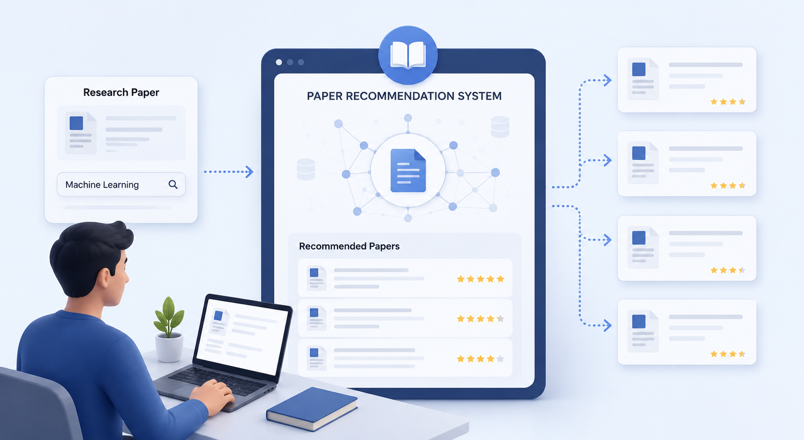
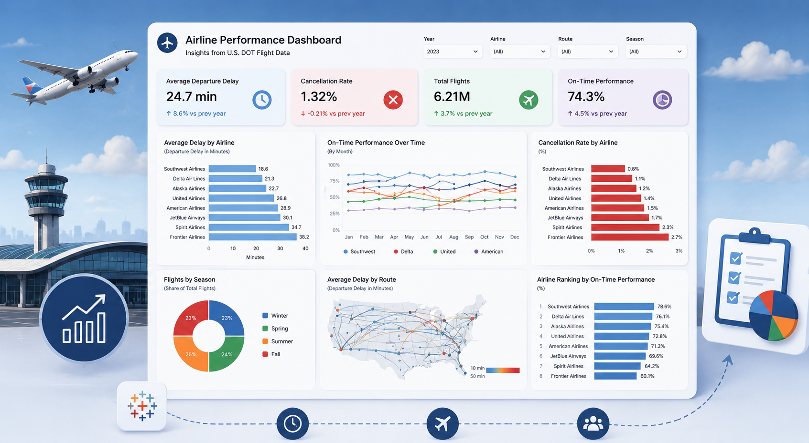
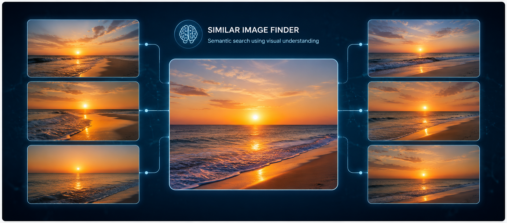
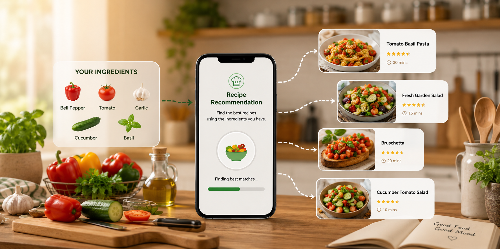

Where Curiosity Meets Code - Crafting Solutions That Matter
A recent Computer Science Graduate Student from the George Washington University, with hands-on experience building end-to-end data pipelines, machine learning systems, and interactive dashboards.
My journey in tech is driven by an insatiable curiosity to understand how data tells stories and how technology can transform those stories into actionable insights. I like working on problems where data is messy and the answer isn't obvious. I've built systems that process millions of records, trained models that power real recommendations, and automated workflows that saved teams hours of manual work every week.
I'm comfortable across the full stack - writing Python and SQL to clean and model data, building APIs, deploying to cloud, and presenting findings to non-technical stakeholders. I enjoy the full journey from raw data to something people can actually use.
I'm actively looking for full-time roles in Data Analytics, Data Engineer, or AI Engineer. I'm open to relocating anywhere in the U.S. As an F-1 OPT graduate, I'm authorized to work in the U.S. for 3 years without employer sponsorship (STEM OPT eligible).
GPA: 3.77
Courses: Advanced Machine Learning, Neural Networks and Deep Learning, Cloud Computing, Database Systems II
Honors: SEAS Merit Award

Researchers waste hours searching for relevant papers. I built a system that makes that faster and smarter - using 23.4 million research papers and 278 million citation links to surface the most relevant results.
Built a full data system around one real question: which airline is actually more reliable for your route?

Took raw U.S. DOT flight data and turned it into a clean, interactive Tableau dashboard that tells a real story about airline reliability.
Built an analysis platform on top of the FDA's drug safety database - 18 million+ real-world adverse event reports across multiple years.

Built a search engine for images - upload or describe what you're looking for, and the system finds visually similar images without needing labels or tags.

A practical ML project: you type in the ingredients you have, and the system finds the best recipes that match — including near-matches, so you discover things you wouldn't have searched for.
Analyzed Prime Video's full content library — 6,000+ titles across genres, regions, and release years — to understand how the platform has grown and what audiences respond to.
uppusneha11@gmail.com
Arlington, VA
(Open to Relocate)